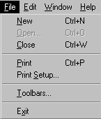
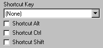
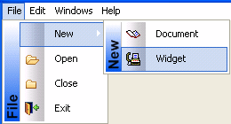

By setting menu properties, you can customize the display of menus in applications that you create with PowerBuilder. You use the Menu painter to change the appearance and behavior of your menu and menu items by choosing different settings in the tab pages in the Properties view. For a list of all menu item properties, see Objects and Controls .
This section describes the properties you can set when you select a menu item and then select the General tab page in the Properties view.
MicroHelp is a brief text description of the menu item that displays on the status bar at the bottom of a Multiple Document Interface (MDI) application window. Type the text you want to display in the MicroHelp box. For examples of MicroHelp text, select an item from a menu in PowerBuilder and look at the text that displays in the status bar.
A tag is a text string that you can associate with an object and use in any way you want.
For information about defining MicroHelp text and tag properties, see the chapter on building MDI applications in Application Techniques .
On the General tab page in the Properties view, you can also specify how a menu item appears at runtime.
| Property | Meaning |
|---|---|
| Visible | Whether the menu item is visible. An invisible menu item still displays in the WYSIWYG and Tree Menu views, but at runtime, it will not display. In WYSIWYG Menu view, an invisible item has faded and dotted text. |
| Enabled | Whether the menu item can be selected. |
| Checked | Whether the menu item displays with a check mark next to it. |
| Default | Whether the menu item text is bold. In a pop-up menu, Default indicates what action occurs if the user double-clicks instead of right-clicks on an item. In dragging, Default indicates what happens when an item is dragged with the left mouse button instead of the right mouse button. |
| ShiftToRight | Whether the menu item shifts to the right
(or down for a drop-down or cascading menu) when you add
menu items in a menu that is inherited from this menu. Selecting
this property allows you to insert menu items in descendent menus,
instead of being able to add them only to the end. For more information, see "Inserting menu items in a descendent menu". |
| MergeOption | The way menus are modified when an OLE
object is activated. Options are: File, Edit, Window, Help, Merge,
Exclude. For more information, see the chapter about using OLE in an application in Application Techniques. |
| MenuItemType | Whether the menu item you are creating is Normal, About, Exit, or Help type. |
The settings you specify here determine how the menu items display by default. You can change the values of the properties in scripts at runtime.
Every menu item should have an accelerator key, also called a mnemonic access key, which allows users to select the item from the keyboard by pressing Alt+key when the menu is displayed. Accelerator keys display with an underline in the menu item text.
You can also define shortcut keys, which are combinations of keys that a user can press to select a menu item whether or not the menu is displayed.
For example, in the following menu all menu items have accelerator keys: the accelerator key is N for New, O for Open, and so on. New, Open, Close, and Print each have shortcut keys: the Ctrl key in combination with another key or keys.

You should adopt conventions for using accelerator and shortcut keys in your applications. All menu items should have accelerator keys, and commonly used menu items should have shortcut keys.
If you specify the same shortcut for more than one MenuItem, the command that occurs later in the menu hierarchy is executed.
Some shortcut key combinations, such as Ctrl+C, Ctrl+V, and Ctrl+X, are commonly used by many applications. Avoid using these combinations when you assign shortcut keys for your application.
 To assign an accelerator key:
To assign an accelerator key:
Type an ampersand (&) before the letter in the menu item text that you want to designate as the accelerator key.
For example, &File designates the F in File as an accelerator key and Ma&ximize designates the x in Maximize as an accelerator key.
 Displaying an ampersand in the text If you want an ampersand to display in the menu text, type
two ampersands. For example, Fish&&Chips displays
as Fish&Chips with no accelerator key. To display Fish&Chips
as the menu text with the C underlined as the accelerator, type Fish&&&Chips.
Displaying an ampersand in the text If you want an ampersand to display in the menu text, type
two ampersands. For example, Fish&&Chips displays
as Fish&Chips with no accelerator key. To display Fish&Chips
as the menu text with the C underlined as the accelerator, type Fish&&&Chips.
 To assign a shortcut key:
To assign a shortcut key:
Select the menu item to which you want to assign a shortcut key.
Select the General tab in the Properties view.
Select a key from the Shortcut Key drop-down list.

Select Shortcut Alt, Shortcut Ctrl, and/or Shortcut Shift to create a key combination.
PowerBuilder displays the shortcut key next to the menu item name.
Menus with a contemporary style have a three-dimensional menu appearance and can include bitmap and menu title bands. The following figure shows a contemporary style menu:

After you select the contemporary style, you can modify other menu style properties on the top-level menu object and on all lower-level menu items. Since it is important to maintain a consistent look across each menu and toolbar, very few style properties are modifiable at the menu item level.
 If you select the traditional menu style If you select traditionalmenu! for
the top-level menu object, you cannot modify any of the menu style
properties.
If you select the traditional menu style If you select traditionalmenu! for
the top-level menu object, you cannot modify any of the menu style
properties.
You can modify menu style properties only at design time. After you select the contemporary menu style for a top-level menu object, you can select values for other style properties to manipulate a menu's visual appearance. The following properties are modifiable for the top-level menu object only; you cannot modify them for individual menu items:
Menu items have style properties that you set at design time. You cannot use these style properties with a traditional style menu. Unlike the style properties on the Menu object that display on the Appearance tab of the Properties view, the fields where you set these properties are located on the General tab of the Properties view for each menu item.
You select or enter values for the menu item style properties on the General tab of the Properties view for each menu item. You can make selections for the MenuAnimation and MenuImage properties only if the MenuBitmaps check box for the current menu object is selected. The MenuBitmaps check box is selected by default for the contemporary menu style.
You can enter text for the MenuTitleText property only if the MenuTitles check box for the current menu object is selected.